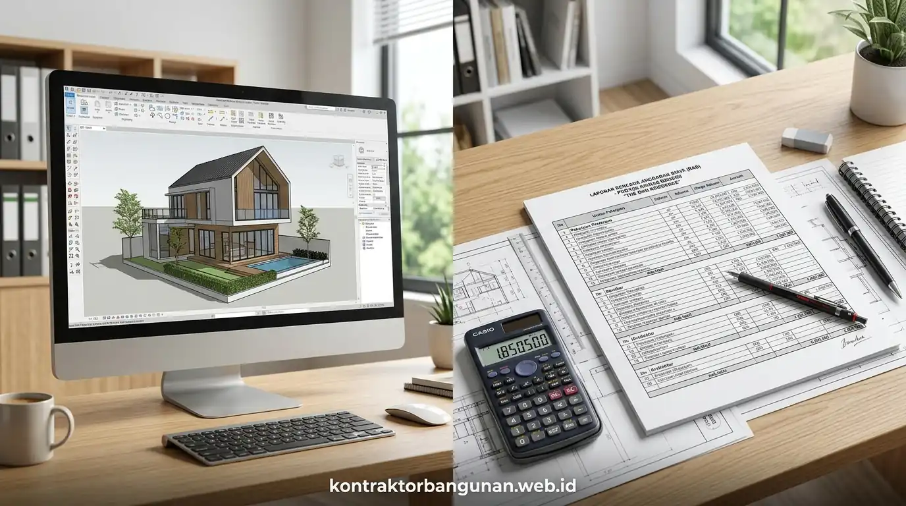

Apa Alasan Utama Mengapa Desain Arsitek Sangat Penting Sebelum Membangun Rumah?
Desain arsitek sangat penting karena memetakan kebutuhan fungsi ruang, mengoptimalkan pencahayaan dan sirkulasi udara alami, serta menjadi landasan kalkulasi anggaran Rencana Anggaran Biaya yang presisi.
Membangun rumah tanpa perencanaan gambar kerja arsitektur yang matang adalah spekulasi finansial berisiko tinggi yang kerap memicu pembongkaran dinding berulang di lapangan. Keberadaan desain arsitek profesional bukan sekadar menghasilkan visualisasi 3D yang indah, melainkan merumuskan kalkulasi struktur tahan gempa, efisiensi sirkulasi udara alami, dan acuan Rencana Anggaran Biaya (RAB) yang presisi. Berdasarkan audit konstruksi modern, keterlibatan arsitek sejak fase perancangan terbukti menghemat total biaya pembangunan secara signifikan sekaligus mengamankan legalitas perizinan properti Anda.
Empat nilai strategis yang dihadirkan oleh desain arsitektur profesional:
- Optimalisasi Tata Ruang (*Space Efficiency*): Setiap sentimeter persegi lahan dimanfaatkan secara maksimal tanpa menyisakan sudut mati (*dead space*), sangat krusial bagi lahan perkotaan terbatas.
- Penerapan Desain Pasif Tropis: Orientasi bukaan jendela dan ventilasi silang (*cross ventilation*) dirancang mengikuti lintasan matahari dan arah angin untuk menjaga suhu ruangan tetap sejuk alami.
- Gambar Kerja Standar DED (*Detail Engineering Design*): Menyediakan panduan teknis yang presisi bagi mandor dan tukang, mulai dari denah pola lantai, denah plafon, titik lampu, hingga detail pembesian kolom beton.
- Akurasi Estimasi Bahan Bangunan: Memungkinkan penyusunan Bill of Quantities (BoQ) yang akurat sehingga tidak ada material yang terbeli secara berlebihan atau mengalami kekurangan mendadak.
Komparasi: Membangun dengan Jasa Arsitek vs Langsung Tanpa Gambar Kerja
Membangun dengan arsitek menjamin kepastian visual, efisiensi struktur, dan transparansi biaya, berbeda dengan metode tanpa gambar yang rawan salah tafsir dan pembongkaran fisik mahal.
Banyak pemilik rumah pemula ragu menyewa arsitek karena menganggap biaya jasanya sebagai beban tambahan. Padahal, ketiadaan gambar kerja acap kali memicu biaya siluman yang jauh melampaui tarif seorang perencana profesional:
| Aspek Evaluasi Proyek | Membangun dengan Desain Arsitek Profesional | Membangun Tanpa Gambar Kerja (Tukang Saja) |
|---|---|---|
| Visualisasi Pra-Konstruksi | Animasi 3D dan rendering fotorealistik interior/eksterior detail. | Hanya sketsa kasar di secarik kertas atau imajinasi lisan mandor. |
| Kontrol Anggaran RAB | Terkunci pasti; volume kebutuhan material terhitung presisi. | Biaya tak terduga melonjak 25% - 40% akibat salah perhitungan. |
| Kenyamanan Termal & Sirkulasi | Pencahayaan alami melimpah dan sirkulasi angin silang terjaga. | Ruangan gelap, pengap, lembap, dan boros penggunaan lampu/AC. |
| Resiko Pembongkaran Lapangan | Hampir 0%; seluruh revisi dan kecocokan ruang diselesaikan di gambar. | Tinggi; dinding terpaksa dijebol karena pintu/tangga tidak proporsional. |
| Pengurusan Izin Legal (PBG/SIMBG) | Dokumen teknis lengkap siap unggah ke portal resmi pemerintah. | Ditolak oleh dinas perizinan karena tidak memiliki gambar arsitektur SKA. |
| Nilai Jual Kembali (*Resale Value*) | Tinggi; memiliki estetika berkelas dan tata ruang bernilai investasi. | Rendah; fasad tampak generik dan denah ruangan tidak teratur. |

Penyusunan gambar detail kerja arsitektural (DED) lengkap oleh tim Kontraktor Bangunan sebagai panduan presisi tukang di lapangan agar hasil pengerjaan 100% presisi.
Apa Saja Bahaya Finansial dan Struktural Jika Membangun Tanpa Desain Arsitek?
Bahaya membangun tanpa desain meliputi salah ukuran struktur yang mengancam keselamatan, pembengkakan anggaran biaya tak terkendali, serta kegagalan memperoleh izin legal PBG.
Menyerahkan seluruh keputusan arsitektural dan struktural hanya kepada mandor bangunan konvensional sering berujung pada kekecewaan besar. Bukti statistik industri konstruksi di Indonesia menunjukkan fakta riil:
- Ikatan Arsitek Indonesia (IAI) & Kementerian PUPR Periode 2024–2025: Mencatat bahwa 67,8% sengketa biaya dan keterlambatan proyek perumahan bersumber langsung dari ketiadaan gambar kerja Detail Engineering Design (DED) yang baku dan mengikat secara hukum.
- Laporan Efisiensi Energi Bangunan Gedung BPS 2025/2026: Membuktikan bahwa hunian yang dirancang dengan orientasi termal arsitektur yang tepat mampu memangkas tagihan listrik pendingin ruangan (AC) dan lampu hingga 32,5% per tahun secara konsisten.
Dampak negatif fatal yang sering dialami pemilik rumah tanpa keterlibatan arsitek:
- Dimensi Tangga yang Tidak Ergonomis: Kemiringan tangga terlalu curam (*incline* berbahaya) atau tinggi pijakan (*optride*) tidak merata yang rawan membuat penghuni tergelincir.
- Beban Berlebih pada Balok Gantung: Penempatan dinding bata lantai dua yang tidak sejajar dengan balok struktur lantai satu di bawahnya, menyebabkan dak cor melengkung dan retak struktural.
- Ruangan Lembap dan Berjamur: Ketiadaan bukaan jendela udara yang proporsional membuat sirkulasi udara terperangkap, memicu pertumbuhan jamur spora dinding yang mengganggu kesehatan pernapasan keluarga.
Mengapa Memilih Layanan Desain Arsitek di Kontraktor Bangunan Lebih Menguntungkan?
Memilih arsitek di Kontraktor Bangunan lebih menguntungkan karena menawarkan integrasi satu pintu (*design-build*), biaya desain yang dapat digratiskan penuh, serta jaminan realisasi fisik sesuai gambar.
Sering terjadi kesenjangan (*gap*) antara arsitek konsultan lepas yang membuat desain mewah nan rumit dengan kontraktor pelaksana yang kesulitan mewujudkannya di lapangan karena biaya anggaran yang tidak masuk akal. Di Kontraktor Bangunan, kami menyatukan proses tersebut secara harmonis:
- Desain Realistis Sesuai Budget (*Design-to-Cost*): Arsitek kami merancang bangunan berlandaskan pagu anggaran yang Anda miliki, sehingga desain indah yang dibuat pasti dapat dieksekusi tanpa kompromi mutu.
- Promo Cashback / Gratis Biaya Jasa Arsitek: Khusus bagi klien yang melanjutkan pengerjaan fisik pembangunan bersama tim kontraktor kami, biaya paket desain arsitek dan DED dikembalikan 100% (*cashback full refund*).
- Kelengkapan Berkas Izin PBG & SLF: Tim perencana kami telah tersertifikasi untuk menyiapkan seluruh gambar teknis arsitektur, elektrikal, dan struktur ber-SKA resmi untuk verifikasi dinas perizinan.
- Garansi Kesesuaian Hasil Pembangunan: Kami menjamin wujud fisik rumah yang dibangun akan 100% sama dengan visualisasi rendering 3D yang telah Anda setujui.
Wujudkan Desain Rumah Impian Anda Bersama Arsitek Berpengalaman!
Diskusikan konsep tata ruang, fasad 3D, dan perhitungan RAB transparan bersama tim arsitek Kontraktor Bangunan tanpa dipungut biaya komitmen awal.
Konsultasi Desain & RAB Gratis SekarangBagaimana Tahapan Proses Perancangan Arsitektur yang Benar dan Efisien?
Tahapan perancangan diawali dari analisis kebutuhan ruang dan tapak lahan, penyusunan denah 2D konseptual, pemodelan fasad 3D fotorealistik, hingga finalisasi DED dan lembar RAB komprehensif.
Alur kerja standar operasional perancangan arsitektur di Kontraktor Bangunan:
- Tahap 1: Wawancara Kebutuhan Ruang & Pengukuran Lahan: Mengumpulkan informasi gaya hidup keluarga, jumlah kamar tidur, hobi, kebutuhan ruang kerja (*home office*), serta orientasi kontur tanah lahan.
- Tahap 2: Skematik Desain & Tata Letak Denah (Floor Plan): Merancang alur sirkulasi ruang (*zoning public, semi-private, private*), posisi bukaan cahaya, dan peletakan taman hijau dalam rumah (*inner courtyard*).
- Tahap 3: Pemodelan 3D Eksterior & Interior Fotorealistik: Menampilkan bentuk fasad rumah modern kontemporer, kombinasi warna cat, tekstur material batu alam/kayu sintetis, dan tata pencahayaan lampu malam.
- Tahap 4: Penyusunan Dokumen Gambar Kerja DED Lengkap: Membuat puluhan lembar gambar teknis arsitektur, pembesian struktur kolom beton, instalasi pemipaan air, dan instalasi titik listrik.
- Tahap 5: Perhitungan Rencana Anggaran Biaya (RAB): Menyusun lembar kalkulasi volume bahan dan tenaga kerja secara mendetail sehingga pemilik rumah memiliki kendali keuangan 100%.
FAQ seputar Pentingnya Desain Arsitek Sebelum Bangun Rumah
Kesimpulan Praktis
Memahami pentingnya desain arsitek sebelum bangun rumah adalah kunci utama keselamatan investasi properti Anda. Desain arsitektur bukan pemborosan, melainkan investasi strategis yang menyelamatkan Anda dari bahaya salah bangun, pemborosan bahan, dan risiko sengketa biaya. Percayakan perancangan hunian Anda kepada tim arsitek dan insinyur terpadu Kontraktor Bangunan untuk mewujudkan rumah yang kokoh, estetis, hemat energi, dan bernilai investasi tinggi.